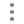

<div class="content-home">
  <div class="d-flex flex-wrap justify-content-between mb-4">
    <div class="d-flex flex-column gap-2">
      <h2 class="titulo">Termos</h2>
      <h3 class="subtitulo">Qual termo gostaria de acessar hoje?</h3>
    </div>
    <button 
      class="adicionar d-flex align-items-center justify-content-between gap-4"
      (click)="openModalAdicionarTurma()"
      >
      
      <span>Adicionar Termo</span>
    </button>
  </div>
  <div class="group-cards d-flex flex-wrap justify-content-between gap-4 mb-4">
    @for (blog of blogs; track trackId) {
    <div class="card d-flex align-items-center justify-content-center">
        <div ngbDropdown class="more">
          
          <div ngbDropdownMenu aria-labelledby="dropdownConfig">
            <!--<button 
              ngbDropdownItem  
              class="d-flex align-items-center gap-3" 
              [routerLink]="['/blog', blog.id, 'edit']"
              >
              
              Editar
            </button>-->
            <button 
              ngbDropdownItem 
              class="d-flex align-items-center gap-3"
              type="submit" 
              (click)="delete(blog)"
              >
              
              Excluir
            </button>
          </div>
        </div>
      <h2 class="text-card">{{ blog.name }}</h2>
    </div>
  }
  </div> 
</div>
